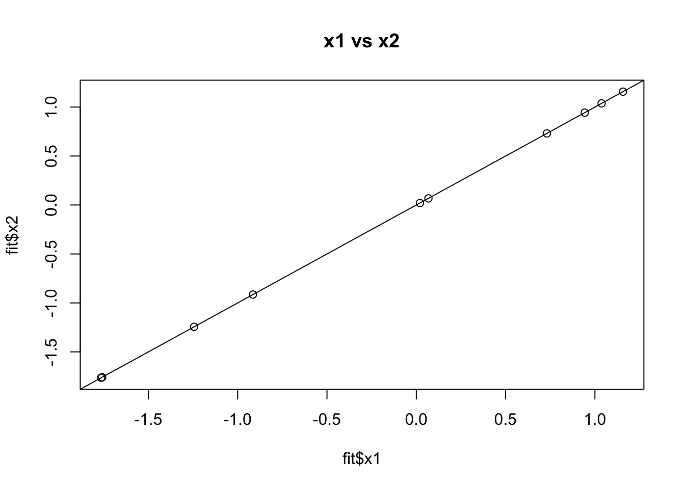
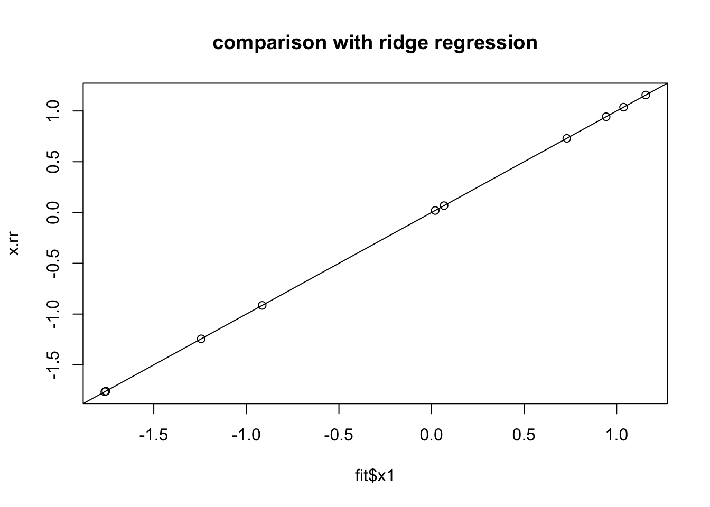
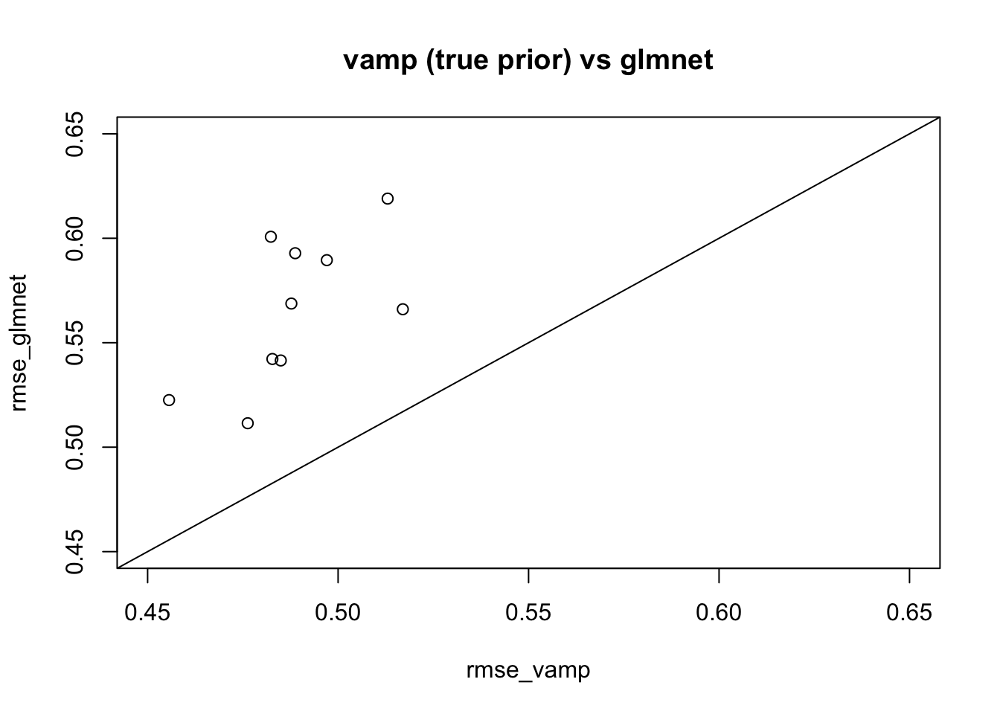

Last updated: 2021-02-04
Checks: 7 0
Knit directory: misc/analysis/
This reproducible R Markdown analysis was created with workflowr (version 1.6.2). The Checks tab describes the reproducibility checks that were applied when the results were created. The Past versions tab lists the development history.
Great! Since the R Markdown file has been committed to the Git repository, you know the exact version of the code that produced these results.
Great job! The global environment was empty. Objects defined in the global environment can affect the analysis in your R Markdown file in unknown ways. For reproduciblity it’s best to always run the code in an empty environment.
The command set.seed(1) was run prior to running the code in the R Markdown file. Setting a seed ensures that any results that rely on randomness, e.g. subsampling or permutations, are reproducible.
Great job! Recording the operating system, R version, and package versions is critical for reproducibility.
Nice! There were no cached chunks for this analysis, so you can be confident that you successfully produced the results during this run.
Great job! Using relative paths to the files within your workflowr project makes it easier to run your code on other machines.
Great! You are using Git for version control. Tracking code development and connecting the code version to the results is critical for reproducibility.
The results in this page were generated with repository version ecbeb2c. See the Past versions tab to see a history of the changes made to the R Markdown and HTML files.
Note that you need to be careful to ensure that all relevant files for the analysis have been committed to Git prior to generating the results (you can use wflow_publish or wflow_git_commit). workflowr only checks the R Markdown file, but you know if there are other scripts or data files that it depends on. Below is the status of the Git repository when the results were generated:
Ignored files:
Ignored: .DS_Store
Ignored: .Rhistory
Ignored: .Rproj.user/
Ignored: analysis/.RData
Ignored: analysis/.Rhistory
Ignored: analysis/ALStruct_cache/
Ignored: data/.Rhistory
Ignored: data/pbmc/
Untracked files:
Untracked: .dropbox
Untracked: Icon
Untracked: analysis/GHstan.Rmd
Untracked: analysis/GTEX-cogaps.Rmd
Untracked: analysis/PACS.Rmd
Untracked: analysis/Rplot.png
Untracked: analysis/SPCAvRP.rmd
Untracked: analysis/admm_02.Rmd
Untracked: analysis/admm_03.Rmd
Untracked: analysis/compare-transformed-models.Rmd
Untracked: analysis/cormotif.Rmd
Untracked: analysis/cp_ash.Rmd
Untracked: analysis/eQTL.perm.rand.pdf
Untracked: analysis/eb_prepilot.Rmd
Untracked: analysis/eb_var.Rmd
Untracked: analysis/ebpmf1.Rmd
Untracked: analysis/flash_test_tree.Rmd
Untracked: analysis/flash_tree.Rmd
Untracked: analysis/ieQTL.perm.rand.pdf
Untracked: analysis/lasso_em_03.Rmd
Untracked: analysis/m6amash.Rmd
Untracked: analysis/mash_bhat_z.Rmd
Untracked: analysis/mash_ieqtl_permutations.Rmd
Untracked: analysis/mixsqp.Rmd
Untracked: analysis/mr.ash_lasso_init.Rmd
Untracked: analysis/mr.mash.test.Rmd
Untracked: analysis/mr_ash_modular.Rmd
Untracked: analysis/mr_ash_parameterization.Rmd
Untracked: analysis/mr_ash_pen.Rmd
Untracked: analysis/mr_ash_ridge.Rmd
Untracked: analysis/mv_gaussian_message_passing.Rmd
Untracked: analysis/nejm.Rmd
Untracked: analysis/nmf_bg.Rmd
Untracked: analysis/normal_conditional_on_r2.Rmd
Untracked: analysis/normalize.Rmd
Untracked: analysis/pbmc.Rmd
Untracked: analysis/poisson_transform.Rmd
Untracked: analysis/pseudodata.Rmd
Untracked: analysis/qrnotes.txt
Untracked: analysis/ridge_iterative_02.Rmd
Untracked: analysis/ridge_iterative_splitting.Rmd
Untracked: analysis/samps/
Untracked: analysis/sc_bimodal.Rmd
Untracked: analysis/shrinkage_comparisons_changepoints.Rmd
Untracked: analysis/susie_en.Rmd
Untracked: analysis/susie_z_investigate.Rmd
Untracked: analysis/svd-timing.Rmd
Untracked: analysis/temp.RDS
Untracked: analysis/temp.Rmd
Untracked: analysis/test-figure/
Untracked: analysis/test.Rmd
Untracked: analysis/test.Rpres
Untracked: analysis/test.md
Untracked: analysis/test_qr.R
Untracked: analysis/test_sparse.Rmd
Untracked: analysis/z.txt
Untracked: code/multivariate_testfuncs.R
Untracked: code/rqb.hacked.R
Untracked: data/4matthew/
Untracked: data/4matthew2/
Untracked: data/E-MTAB-2805.processed.1/
Untracked: data/ENSG00000156738.Sim_Y2.RDS
Untracked: data/GDS5363_full.soft.gz
Untracked: data/GSE41265_allGenesTPM.txt
Untracked: data/Muscle_Skeletal.ACTN3.pm1Mb.RDS
Untracked: data/Thyroid.FMO2.pm1Mb.RDS
Untracked: data/bmass.HaemgenRBC2016.MAF01.Vs2.MergedDataSources.200kRanSubset.ChrBPMAFMarkerZScores.vs1.txt.gz
Untracked: data/bmass.HaemgenRBC2016.Vs2.NewSNPs.ZScores.hclust.vs1.txt
Untracked: data/bmass.HaemgenRBC2016.Vs2.PreviousSNPs.ZScores.hclust.vs1.txt
Untracked: data/eb_prepilot/
Untracked: data/finemap_data/fmo2.sim/b.txt
Untracked: data/finemap_data/fmo2.sim/dap_out.txt
Untracked: data/finemap_data/fmo2.sim/dap_out2.txt
Untracked: data/finemap_data/fmo2.sim/dap_out2_snp.txt
Untracked: data/finemap_data/fmo2.sim/dap_out_snp.txt
Untracked: data/finemap_data/fmo2.sim/data
Untracked: data/finemap_data/fmo2.sim/fmo2.sim.config
Untracked: data/finemap_data/fmo2.sim/fmo2.sim.k
Untracked: data/finemap_data/fmo2.sim/fmo2.sim.k4.config
Untracked: data/finemap_data/fmo2.sim/fmo2.sim.k4.snp
Untracked: data/finemap_data/fmo2.sim/fmo2.sim.ld
Untracked: data/finemap_data/fmo2.sim/fmo2.sim.snp
Untracked: data/finemap_data/fmo2.sim/fmo2.sim.z
Untracked: data/finemap_data/fmo2.sim/pos.txt
Untracked: data/logm.csv
Untracked: data/m.cd.RDS
Untracked: data/m.cdu.old.RDS
Untracked: data/m.new.cd.RDS
Untracked: data/m.old.cd.RDS
Untracked: data/mainbib.bib.old
Untracked: data/mat.csv
Untracked: data/mat.txt
Untracked: data/mat_new.csv
Untracked: data/matrix_lik.rds
Untracked: data/paintor_data/
Untracked: data/running_data_chris.csv
Untracked: data/running_data_matthew.csv
Untracked: data/temp.txt
Untracked: data/y.txt
Untracked: data/y_f.txt
Untracked: data/zscore_jointLCLs_m6AQTLs_susie_eQTLpruned.rds
Untracked: data/zscore_jointLCLs_random.rds
Untracked: explore_udi.R
Untracked: output/fit.k10.rds
Untracked: output/fit.varbvs.RDS
Untracked: output/glmnet.fit.RDS
Untracked: output/test.bv.txt
Untracked: output/test.gamma.txt
Untracked: output/test.hyp.txt
Untracked: output/test.log.txt
Untracked: output/test.param.txt
Untracked: output/test2.bv.txt
Untracked: output/test2.gamma.txt
Untracked: output/test2.hyp.txt
Untracked: output/test2.log.txt
Untracked: output/test2.param.txt
Untracked: output/test3.bv.txt
Untracked: output/test3.gamma.txt
Untracked: output/test3.hyp.txt
Untracked: output/test3.log.txt
Untracked: output/test3.param.txt
Untracked: output/test4.bv.txt
Untracked: output/test4.gamma.txt
Untracked: output/test4.hyp.txt
Untracked: output/test4.log.txt
Untracked: output/test4.param.txt
Untracked: output/test5.bv.txt
Untracked: output/test5.gamma.txt
Untracked: output/test5.hyp.txt
Untracked: output/test5.log.txt
Untracked: output/test5.param.txt
Unstaged changes:
Modified: analysis/ash_delta_operator.Rmd
Modified: analysis/ash_pois_bcell.Rmd
Modified: analysis/index.Rmd
Modified: analysis/lasso_em.Rmd
Modified: analysis/minque.Rmd
Modified: analysis/mr_missing_data.Rmd
Modified: analysis/ridge_admm.Rmd
Note that any generated files, e.g. HTML, png, CSS, etc., are not included in this status report because it is ok for generated content to have uncommitted changes.
These are the previous versions of the repository in which changes were made to the R Markdown (analysis/vamp_01.Rmd) and HTML (docs/vamp_01.html) files. If you’ve configured a remote Git repository (see ?wflow_git_remote), click on the hyperlinks in the table below to view the files as they were in that past version.
| File | Version | Author | Date | Message |
|---|---|---|---|---|
| Rmd | ecbeb2c | Matthew Stephens | 2021-02-04 | wflow_publish(“vamp_01.Rmd”) |
| html | 89f41f9 | Matthew Stephens | 2021-02-04 | Build site. |
| Rmd | ddcef3b | Matthew Stephens | 2021-02-04 | wflow_publish(“vamp_01.Rmd”) |
library(ebnm)
library(glmnet)Warning: package 'glmnet' was built under R version 3.6.2Loading required package: MatrixLoaded glmnet 4.1library(ashr)My goal here is to implement a version of VAMP in R. I’m using algorithm 1 from Fletcher+Schniter (which includes EM steps, but I am ignoring those for now.)
I will try to use mostly their notation, where the model is \[y \sim N(Ax, 1/\theta_2)\] First I simulate some data under this model for testing:
M = 100
N = 10
A = matrix(rnorm(M*N, 0,1),nrow=M)
theta2 = 1
x = rnorm(N)
y = A %*% x + rnorm(M,0,sd=sqrt(1/theta2))For comparison I’m going to do the ridge regression estimate. For prior \(x \sim N(0,s_x^2)\) the posterior on \(x\) is \(x \sim N(\mu_1,\Sigma_1)\) where \[\mu_1 = \theta_2 \Sigma_1 A'y\] and \[\Sigma_1 = (\theta_2 A'A + s_x^2 I)^{-1}.\]
S = chol2inv(chol(theta2 * t(A) %*% A + diag(N)))
x.rr = theta2 * S %*% t(A) %*% yNow here is my initial implementation of vamp. Note there is no EB for now - the ebnm function has a fixed prior and just does the shrinkage.
This implmentation uses the idea of performing an svd of A to improve efficiency per iteration. The computationally intensive part without this trick is computing the inverse of \(Q\) (equations 8-10 in the EM-VAMP paper). Here I briefly outline this trick.
Assume \(A\) has SVD \(A=UDV'\), so \(A'A = VD^2V'\). If necessary include 0 eigenvalues in \(D\), so \(V\) is a square matrix with \(VV'=V'V=I\). Recall that \[Q:=\theta_2 A'A + \gamma_2 I\] so \[Q^{-1} = V (\theta_2 D^2 + \gamma_2 I)^{-1} V'\] Note that if \(d=diag(D)\) then \[(\theta_2 d_k^2 + \gamma_2)^{-1}= (1/\gamma_2)(1- a_k)\] where \[a_k:= \theta_2 d_k^2/(\theta_2 d_k^2 + \gamma_2).\]
So \[Q^{-1} = (1/\gamma_2)(I - V diag(a) V')\] and this has diagonal elements \[Q^{-1}_{ii} = (1/\gamma_2)(1 - \sum_k V^2_{ik} a_k)\]
Note that if \(d_k=0\) then \(a_k=0\) so there is no need to actually compute the parts of \(V\) that correspond to 0 eigenvalues.
#' @param A an M by N matrix of covariates
#' @param y an M vector of outcomes
#' @param ebnm_fn a function (eg from ebnm package) that takes parameters x and s and returns posterior mean and sd under a normal means model (no eb for now!)
vamp = function(A,y,ebnm_fn= function(x,s){ebnm_normal(x=x,s=s,mode=0,scale=1)}, r1.init = rnorm(ncol(A)), gamma1.init = 1, theta2=1, niter = 100){
# initialize
r1 = r1.init
gamma1 = gamma1.init
N = ncol(A)
A.svd = svd(A)
v = A.svd$v
d = A.svd$d
for(k in 1:niter){
fit = do.call(ebnm_fn,list(x = r1,s = sqrt(1/gamma1)))
x1 = fit$posterior$mean
eta1 = 1/(mean(fit$posterior$sd^2))
gamma2 = eta1 - gamma1
r2 = (eta1 * x1 - gamma1 * r1)/gamma2
# this is the brute force approach; superceded by the svd approach
#Q = theta2 * t(A) %*% A + gamma2 * diag(N)
#Qinv = chol2inv(chol(Q))
#diag_Qinv = diag(Qinv)
# The following avoids computing Qinv explicitly
a = theta2*d^2/(theta2*d^2 + gamma2)
#Qinv = (1/gamma2) * (diag(N) - v %*% diag(a) %*% t(v))
diag_Qinv = (1/gamma2) * (1- colSums( a * t(v^2) ))
eta2 = 1/mean(diag_Qinv)
#x2 = Qinv %*% (theta2 * t(A) %*% y + gamma2 * r2)
temp = (theta2 * t(A) %*% y + gamma2 * r2) # temp is a vector
temp2= (v %*% (diag(a) %*% (t(v) %*% temp))) # matrix mult vdiag(a)v'temp efficiently
x2 = (1/gamma2) * (temp - temp2)
gamma1 = eta2 - gamma2
r1 = (eta2 * x2 - gamma2 * r2)/ gamma1
}
return(fit = list(x1=x1,x2=x2, eta1=eta1, eta2=eta2))
}Now I try this out with a normal prior (which should give same answer as ridge regression and does…)
fit = vamp(A,y)
plot(fit$x1,fit$x2, main="x1 vs x2")
abline(a=0,b=1)
| Version | Author | Date |
|---|---|---|
| 89f41f9 | Matthew Stephens | 2021-02-04 |
plot(fit$x1,x.rr, main="comparison with ridge regression")
abline(a=0,b=1)
| Version | Author | Date |
|---|---|---|
| 89f41f9 | Matthew Stephens | 2021-02-04 |
Note that the \(\eta\) values converge to the inverse of the mean of the digonal of the posterior variance.
fit$eta1 - fit$eta2[1] 01/fit$eta1 - mean(diag(S))[1] -2.844947e-16Here we try vamp on a problematic case for mean field from here
Here the prior is a 50-50 mixture of 0 and \(N(0,1)\). I’m going to give vamp both the true prior and the true residual variance.
my_g = normalmix(pi=c(0.5,0.5), mean=c(0,0), sd=c(0,1))
my_ebnm_fn = function(x,s){ebnm(x,s,g_init=my_g,fix_g = TRUE )} set.seed(123)
n <- 500
p <- 1000
p_causal <- 500 # number of causal variables (simulated effects N(0,1))
pve <- 0.95
nrep = 10
rmse_vamp = rep(0,nrep)
rmse_glmnet = rep(0,nrep)
for(i in 1:nrep){
sim=list()
sim$X = matrix(rnorm(n*p,sd=1),nrow=n)
B <- rep(0,p)
causal_variables <- sample(x=(1:p), size=p_causal)
B[causal_variables] <- rnorm(n=p_causal, mean=0, sd=1)
sim$B = B
sim$Y = sim$X %*% sim$B
sigma2 = ((1-pve)/(pve))*sd(sim$Y)^2
E = rnorm(n,sd = sqrt(sigma2))
sim$Y = sim$Y + E
fit_glmnet <- cv.glmnet(x=sim$X, y=sim$Y, family="gaussian", alpha=1, standardize=FALSE)
fit_vamp <- vamp(A=sim$X, y = sim$Y, ebnm_fn = my_ebnm_fn, theta2 = 1/sigma2, niter=10)
rmse_glmnet[i] = sqrt(mean((sim$B-coef(fit_glmnet)[-1])^2))
rmse_vamp[i] = sqrt(mean((sim$B-fit_vamp$x1)^2))
}
plot(rmse_vamp,rmse_glmnet,main="vamp (true prior) vs glmnet",xlim=c(0.45,0.65),ylim=c(0.45,0.65))
abline(a=0,b=1)
| Version | Author | Date |
|---|---|---|
| 89f41f9 | Matthew Stephens | 2021-02-04 |
sessionInfo()R version 3.6.0 (2019-04-26)
Platform: x86_64-apple-darwin15.6.0 (64-bit)
Running under: macOS 10.16
Matrix products: default
BLAS: /Library/Frameworks/R.framework/Versions/3.6/Resources/lib/libRblas.0.dylib
LAPACK: /Library/Frameworks/R.framework/Versions/3.6/Resources/lib/libRlapack.dylib
locale:
[1] en_US.UTF-8/en_US.UTF-8/en_US.UTF-8/C/en_US.UTF-8/en_US.UTF-8
attached base packages:
[1] stats graphics grDevices utils datasets methods base
other attached packages:
[1] ashr_2.2-51 glmnet_4.1 Matrix_1.2-18 ebnm_0.1-24
loaded via a namespace (and not attached):
[1] Rcpp_1.0.6 pillar_1.4.6 compiler_3.6.0 later_1.1.0.1
[5] git2r_0.27.1 workflowr_1.6.2 iterators_1.0.12 tools_3.6.0
[9] digest_0.6.27 evaluate_0.14 lifecycle_0.2.0 tibble_3.0.4
[13] lattice_0.20-41 pkgconfig_2.0.3 rlang_0.4.8 foreach_1.5.0
[17] rstudioapi_0.11 yaml_2.2.1 xfun_0.16 invgamma_1.1
[21] stringr_1.4.0 knitr_1.29 fs_1.5.0 vctrs_0.3.4
[25] rprojroot_1.3-2 grid_3.6.0 glue_1.4.2 R6_2.4.1
[29] survival_3.2-3 rmarkdown_2.3 mixsqp_0.3-43 irlba_2.3.3
[33] magrittr_1.5 whisker_0.4 splines_3.6.0 codetools_0.2-16
[37] backports_1.1.10 promises_1.1.1 ellipsis_0.3.1 htmltools_0.5.0
[41] shape_1.4.4 httpuv_1.5.4 stringi_1.4.6 truncnorm_1.0-8
[45] SQUAREM_2020.3 crayon_1.3.4